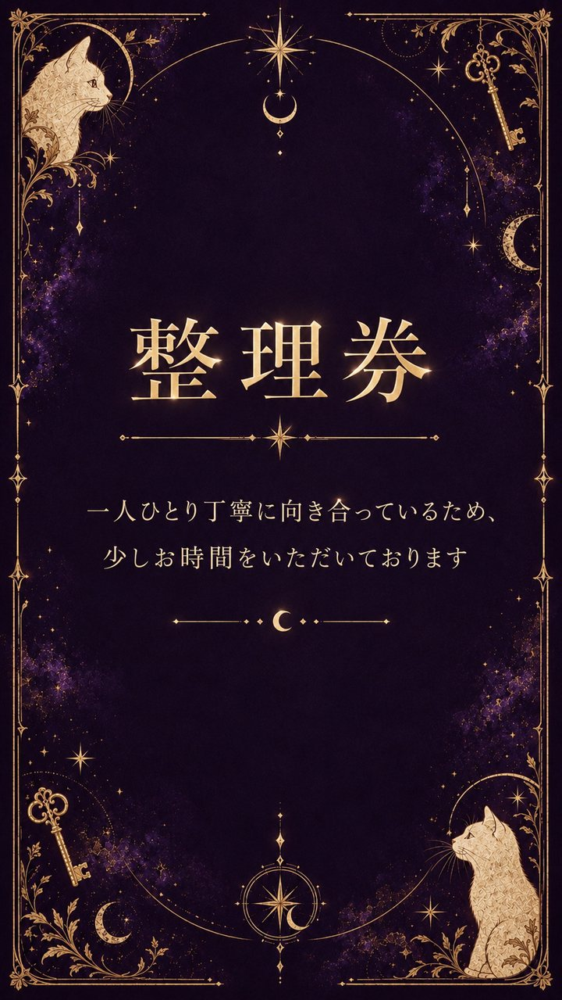

The First Key第一の
ご応募のその瞬間から、
扉はもう少しだけ
開いています
扉は
開いています
最初に、
きっかけは
それでもあなたは、
それは、
人に
友達にも、
答えの
その
私は
まだ回していなくても、
結果が
誰にも
Irumi
この
本当に
あなたの
ご応募順に
お待ちの

Seven Keys
イルミ
この
いただいた
その
鑑定の
同じ
せっかく
ここに
温かい
The First Key第一の
最初に、
きっかけは
それでもあなたは、
それは、
人に
友達にも、
答えの
その
私は
まだ回していなくても、
結果が
The Second Key第二の
「占いって、本当に 当たるの？」
そう
正直に
霊視や
道
相手の
光が
だから
その
The Third Key第三の
文章で
その
待っている
「あの人を 取り戻したいと いうより、
私はもう、 寂しい 夜を 過ごしたくないんだ」
——
だから、
眠る
それだけで、
The Fourth Key第四の
カードや
「いまは
「相手の
受け止めるのに
けれど、それは
夜の
厳しめの
あなたが
私は
だから、
The Fifth Key第五の

応募した
「こんな恋を 相談する なんて、
いけないことかな」
はっきり
恥じる
不倫、
私自身、
人を
守りたい
ここでは、
私が
The Sixth Key第六の
今回の
恋の
けれど
イメージと
そして
「あの人は、 本当は どう 思っているの？」
「この流れは、 いつ 動きだすの？」
そんな
それは、あなたの
まずは
それが、
The Seventh Key第七の
最後の
鑑定を
大きな
むしろ、
たとえば
心に
届いた
感じた
あの
そんな、
読んで
けれど、小さな
その
Epilogue
七つの
ここまで
あとは、
そして、
新しい
それは、
最初の
その
まずは、
では、
お会いしましょう。
Profile
ご縁を
わたし自身、
— こんな
Q & A
はい、
もちろんです。
ご応募順に
鑑定を
Notice
Links